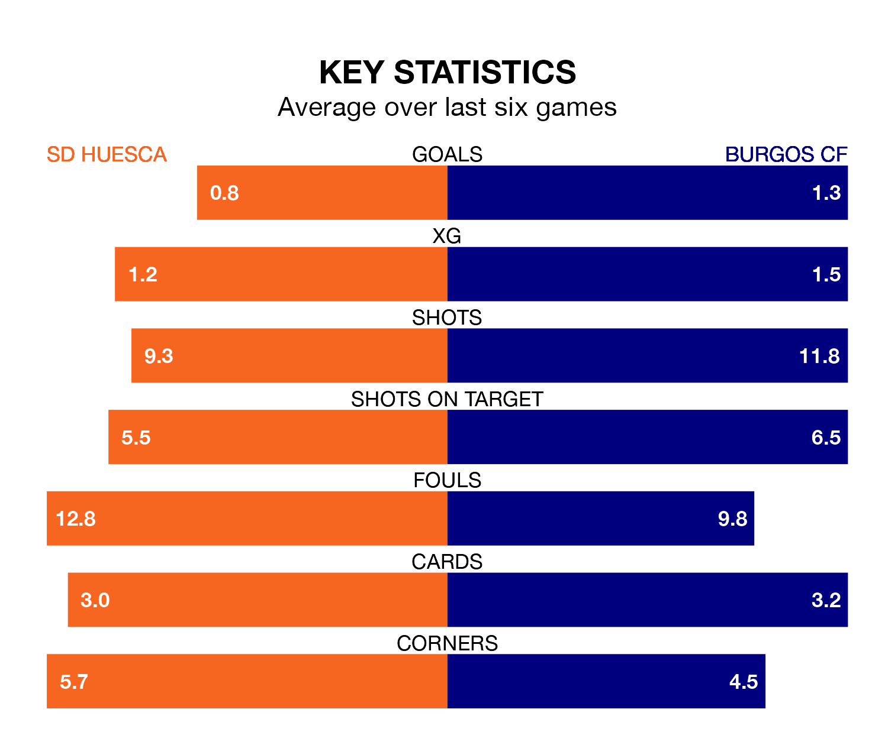

SD Huesca face Burgos CF on Sunday seeking to protect their formidable unbeaten run in the Segunda División.
Huesca are unbeaten in eight, with three wins and five draws, ahead of the 3.15pm kick-off.
They face a Burgos team who have won five and drawn one over the same number of games.
In Álvaro Fernández, Huesca can rely on one of the league's safest pair of hands. He has kept 15 clean sheets in his 31 appearances this season, and no 'keeper has prevented the opposition scoring more often in the Segunda División.
In Burgos's net, José Antonio Caro Díaz has 13 clean sheets in 31 games. He has conceded a goal every 80 minutes, 80% more often than the 140 minutes between goals for Fernández Llorente.
With 25 goals in 31 games so far this season, the home team are scoring at below the league average rate with 0.8 goals per game. But they are conceding fewer than average too, letting in 22 goals at a rate of 0.7 per game.
The visitors, meanwhile, are above average scorers, with 1.3 goals per game, compared to a league average of 1.1. They have conceded 1.2 goals per game.
Burgos are sixth in the table after 31 games, of which they have won 14 and drawn seven, earning 49 points.
Huesca are eight places behind Burgos in 14th, with eight wins and 13 draws putting them on 37 points.
In the last five years, Huesca and Burgos have played each other on five occasions. Huesca won two of them, Burgos one, and they drew twice.
On average, Huesca scored 1.2 goals and Burgos 1.2 in those matches.
Their last meeting was on August 13, when they played out a 1-1 draw.
Huesca's last match was on March 16, a 0-0 draw against CD Tenerife.
Burgos drew 1-1 with Levante UD last time out, also on March 16, with Alejandro San Cristóbal Sánchez on the scoresheet.
Sunday's match will be refereed by Raúl Martín González Francés, who has taken charge of 15 Segunda División games so far this season, issuing two red cards and booking 68 players. He has awarded six penalties.
The last Huesca game González Francés refereed was a 0-0 away draw with CD Eldense on February 10. His last Burgos match was their 2-1 loss away at Sporting Gijón on September 2.
Updated: 10:19 (UTC), 22/03/24